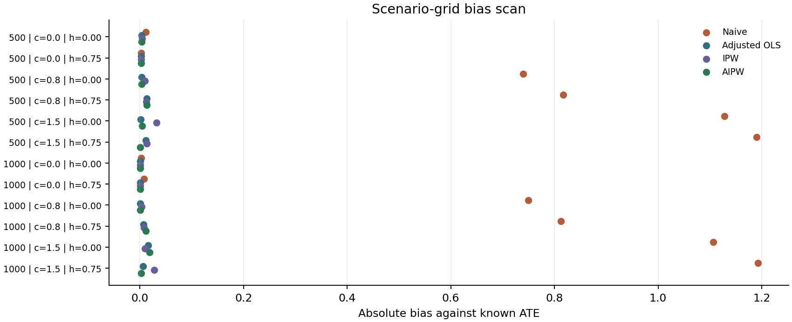
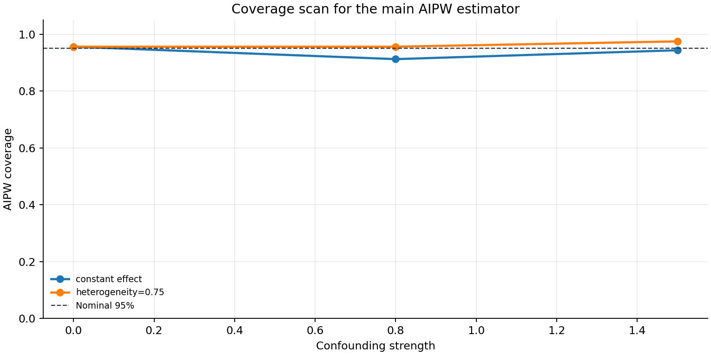

Scenario Summary
Positivity pass/warning refers only to overlap diagnostics. Estimator rankings are finite Monte Carlo evidence under these seeded examples.
| Scenario | n | Confounding | HTE coeff | True ATE | Treat prev. | Overlap width | Positivity | Best RMSE | Report |
|---|---|---|---|---|---|---|---|---|---|
| Randomized, Constant Effect, N=500 | 500 | 0.00 | 0.00 | 2.000 | 0.503 | 0.000 | Pass | Adjusted OLS | report.html |
| Randomized, Heterogeneous Effect, N=500 | 500 | 0.00 | 0.75 | 2.300 | 0.496 | 0.000 | Pass | AIPW | report.html |
| Moderate Confounding, Constant Effect, N=500 | 500 | 0.80 | 0.00 | 2.000 | 0.507 | 0.449 | Pass | Adjusted OLS | report.html |
| Moderate Confounding, Heterogeneous Effect, N=500 | 500 | 0.80 | 0.75 | 2.300 | 0.508 | 0.447 | Pass | Adjusted OLS | report.html |
| Strong Confounding, Constant Effect, N=500 | 500 | 1.50 | 0.00 | 2.000 | 0.540 | 0.556 | Warning | Adjusted OLS | report.html |
| Strong Confounding, Heterogeneous Effect, N=500 | 500 | 1.50 | 0.75 | 2.300 | 0.541 | 0.550 | Warning | Adjusted OLS | report.html |
| Randomized, Constant Effect, N=1000 | 1000 | 0.00 | 0.00 | 2.000 | 0.498 | 0.000 | Pass | AIPW | report.html |
| Randomized, Heterogeneous Effect, N=1000 | 1000 | 0.00 | 0.75 | 2.300 | 0.500 | 0.000 | Pass | IPW | report.html |
| Moderate Confounding, Constant Effect, N=1000 | 1000 | 0.80 | 0.00 | 2.000 | 0.508 | 0.458 | Pass | Adjusted OLS | report.html |
| Moderate Confounding, Heterogeneous Effect, N=1000 | 1000 | 0.80 | 0.75 | 2.300 | 0.511 | 0.454 | Pass | Adjusted OLS | report.html |
| Strong Confounding, Constant Effect, N=1000 | 1000 | 1.50 | 0.00 | 2.000 | 0.541 | 0.556 | Warning | Adjusted OLS | report.html |
| Strong Confounding, Heterogeneous Effect, N=1000 | 1000 | 1.50 | 0.75 | 2.300 | 0.541 | 0.558 | Warning | Adjusted OLS | report.html |
Grid Plots


Estimator Results
MCSE columns quantify simulation uncertainty from finite replications; estimator standard errors quantify uncertainty within a fitted replication.
| Scenario | Estimator | n | Bias | MCSE bias | RMSE | Coverage | MCSE coverage | Failure rate |
|---|---|---|---|---|---|---|---|---|
| Randomized, Constant Effect, N=500 | Naive | 500 | 0.011 | 0.015 | 0.135 | 0.963 | 0.021 | 0.000 |
| Randomized, Constant Effect, N=500 | Adjusted OLS | 500 | -0.004 | 0.011 | 0.093 | 0.950 | 0.024 | 0.000 |
| Randomized, Constant Effect, N=500 | IPW | 500 | -0.004 | 0.011 | 0.094 | 1.000 | 0.000 | 0.000 |
| Randomized, Constant Effect, N=500 | AIPW | 500 | -0.004 | 0.011 | 0.093 | 0.950 | 0.024 | 0.000 |
| Randomized, Heterogeneous Effect, N=500 | Naive | 500 | -0.002 | 0.017 | 0.154 | 0.912 | 0.032 | 0.000 |
| Randomized, Heterogeneous Effect, N=500 | Adjusted OLS | 500 | 0.003 | 0.009 | 0.079 | 1.000 | 0.000 | 0.000 |
| Randomized, Heterogeneous Effect, N=500 | IPW | 500 | 0.003 | 0.009 | 0.079 | 1.000 | 0.000 | 0.000 |
| Randomized, Heterogeneous Effect, N=500 | AIPW | 500 | 0.002 | 0.009 | 0.079 | 1.000 | 0.000 | 0.000 |
| Moderate Confounding, Constant Effect, N=500 | Naive | 500 | 0.739 | 0.014 | 0.750 | 0.000 | 0.000 | 0.000 |
| Moderate Confounding, Constant Effect, N=500 | Adjusted OLS | 500 | -0.004 | 0.011 | 0.094 | 0.912 | 0.032 | 0.000 |
| Moderate Confounding, Constant Effect, N=500 | IPW | 500 | -0.010 | 0.012 | 0.103 | 1.000 | 0.000 | 0.000 |
| Moderate Confounding, Constant Effect, N=500 | AIPW | 500 | -0.003 | 0.011 | 0.099 | 0.912 | 0.032 | 0.000 |
| Moderate Confounding, Heterogeneous Effect, N=500 | Naive | 500 | 0.817 | 0.015 | 0.828 | 0.000 | 0.000 | 0.000 |
| Moderate Confounding, Heterogeneous Effect, N=500 | Adjusted OLS | 500 | 0.013 | 0.011 | 0.099 | 0.950 | 0.024 | 0.000 |
| Moderate Confounding, Heterogeneous Effect, N=500 | IPW | 500 | 0.012 | 0.012 | 0.110 | 0.988 | 0.012 | 0.000 |
| Moderate Confounding, Heterogeneous Effect, N=500 | AIPW | 500 | 0.013 | 0.011 | 0.100 | 0.950 | 0.024 | 0.000 |
| Strong Confounding, Constant Effect, N=500 | Naive | 500 | 1.128 | 0.015 | 1.136 | 0.000 | 0.000 | 0.000 |
| Strong Confounding, Constant Effect, N=500 | Adjusted OLS | 500 | -0.002 | 0.011 | 0.098 | 0.988 | 0.012 | 0.000 |
| Strong Confounding, Constant Effect, N=500 | IPW | 500 | 0.032 | 0.022 | 0.202 | 0.988 | 0.012 | 0.000 |
| Strong Confounding, Constant Effect, N=500 | AIPW | 500 | 0.004 | 0.014 | 0.123 | 0.950 | 0.024 | 0.000 |
| Strong Confounding, Heterogeneous Effect, N=500 | Naive | 500 | 1.190 | 0.015 | 1.197 | 0.000 | 0.000 | 0.000 |
| Strong Confounding, Heterogeneous Effect, N=500 | Adjusted OLS | 500 | -0.012 | 0.011 | 0.102 | 0.938 | 0.027 | 0.000 |
| Strong Confounding, Heterogeneous Effect, N=500 | IPW | 500 | -0.013 | 0.024 | 0.216 | 1.000 | 0.000 | 0.000 |
| Strong Confounding, Heterogeneous Effect, N=500 | AIPW | 500 | 0.001 | 0.015 | 0.131 | 0.963 | 0.021 | 0.000 |
| Randomized, Constant Effect, N=1000 | Naive | 1000 | 0.003 | 0.010 | 0.088 | 0.963 | 0.021 | 0.000 |
| Randomized, Constant Effect, N=1000 | Adjusted OLS | 1000 | 0.001 | 0.007 | 0.062 | 0.963 | 0.021 | 0.000 |
| Randomized, Constant Effect, N=1000 | IPW | 1000 | 0.001 | 0.007 | 0.062 | 1.000 | 0.000 | 0.000 |
| Randomized, Constant Effect, N=1000 | AIPW | 1000 | 0.001 | 0.007 | 0.062 | 0.963 | 0.021 | 0.000 |
| Randomized, Heterogeneous Effect, N=1000 | Naive | 1000 | 0.008 | 0.011 | 0.100 | 0.963 | 0.021 | 0.000 |
| Randomized, Heterogeneous Effect, N=1000 | Adjusted OLS | 1000 | -0.001 | 0.007 | 0.066 | 0.912 | 0.032 | 0.000 |
| Randomized, Heterogeneous Effect, N=1000 | IPW | 1000 | -0.001 | 0.007 | 0.066 | 1.000 | 0.000 | 0.000 |
| Randomized, Heterogeneous Effect, N=1000 | AIPW | 1000 | -0.001 | 0.007 | 0.066 | 0.912 | 0.032 | 0.000 |
| Moderate Confounding, Constant Effect, N=1000 | Naive | 1000 | 0.750 | 0.010 | 0.755 | 0.000 | 0.000 | 0.000 |
| Moderate Confounding, Constant Effect, N=1000 | Adjusted OLS | 1000 | 0.000 | 0.008 | 0.067 | 0.963 | 0.021 | 0.000 |
| Moderate Confounding, Constant Effect, N=1000 | IPW | 1000 | -0.004 | 0.009 | 0.078 | 1.000 | 0.000 | 0.000 |
| Moderate Confounding, Constant Effect, N=1000 | AIPW | 1000 | 0.001 | 0.008 | 0.071 | 0.912 | 0.032 | 0.000 |
| Moderate Confounding, Heterogeneous Effect, N=1000 | Naive | 1000 | 0.812 | 0.012 | 0.819 | 0.000 | 0.000 | 0.000 |
| Moderate Confounding, Heterogeneous Effect, N=1000 | Adjusted OLS | 1000 | 0.007 | 0.008 | 0.068 | 0.963 | 0.021 | 0.000 |
| Moderate Confounding, Heterogeneous Effect, N=1000 | IPW | 1000 | 0.008 | 0.009 | 0.079 | 1.000 | 0.000 | 0.000 |
| Moderate Confounding, Heterogeneous Effect, N=1000 | AIPW | 1000 | 0.012 | 0.008 | 0.071 | 0.963 | 0.021 | 0.000 |
| Strong Confounding, Constant Effect, N=1000 | Naive | 1000 | 1.107 | 0.008 | 1.109 | 0.000 | 0.000 | 0.000 |
| Strong Confounding, Constant Effect, N=1000 | Adjusted OLS | 1000 | -0.016 | 0.008 | 0.073 | 0.938 | 0.027 | 0.000 |
| Strong Confounding, Constant Effect, N=1000 | IPW | 1000 | -0.009 | 0.016 | 0.142 | 1.000 | 0.000 | 0.000 |
| Strong Confounding, Constant Effect, N=1000 | AIPW | 1000 | -0.018 | 0.011 | 0.101 | 0.938 | 0.027 | 0.000 |
| Strong Confounding, Heterogeneous Effect, N=1000 | Naive | 1000 | 1.192 | 0.010 | 1.196 | 0.000 | 0.000 | 0.000 |
| Strong Confounding, Heterogeneous Effect, N=1000 | Adjusted OLS | 1000 | -0.006 | 0.009 | 0.078 | 0.963 | 0.021 | 0.000 |
| Strong Confounding, Heterogeneous Effect, N=1000 | IPW | 1000 | 0.028 | 0.016 | 0.144 | 0.975 | 0.017 | 0.000 |
| Strong Confounding, Heterogeneous Effect, N=1000 | AIPW | 1000 | 0.002 | 0.010 | 0.093 | 0.988 | 0.012 | 0.000 |
Artifacts
grid_results.csv and scenario_summary.csv
dgpforge grid --config examples/scenario_grid_causal_ate.yaml --out examples/generated_reports/scenario_grid